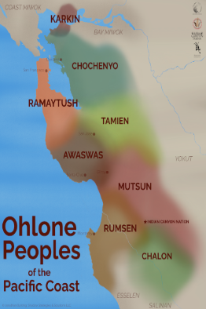
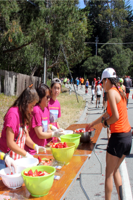

Our Values at Pacific Trails Resort

Land History
Here at Pacific Trails Resort we acknowledge that the land we occupy is the ancestral land of the Esselen Tribe of Monterey County. This land acknowledgement is our commitment to honor the Esselen people and establish a relationship of respect knowledge.
Relaxation
We honor your relaxing getaway, all activities supported about Pacific Trails Resort are not mandatory and we wish to make your stay as relaxing as possible. Each yurt offered comes with a option of room service and the door tag to not be disturbed.

Our Team
Pacific Trails employs locals of the area, to support community members with job opportunities and give guests a view at life here in the North California Coast. Our knowledgeable team of locals is more than willing discuss restaurants recommendations and other activities outside of the Pacific Trails Resort.
We hope to see you soon!